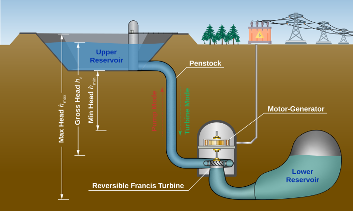

IEEE Conference on Decision and Control (CDC), 2026
Mixed-Integer Nonlinear Differentiable Predictive Control for Underground Pumped Hydro Energy Storage Systems
1Department of Civil and Systems Engineering, Johns Hopkins University
2Slovak University of Technology in Bratislava
Scheduling an underground pumped hydro plant for the day-ahead market is a mixed-integer nonlinear program: every hour the unit picks pump, idle, or turbine and a power setpoint, under polynomial performance curves and a nonconvex volume-head coupling. MI-DPC trains a Transformer policy to output the whole 24-hour schedule in one forward pass. Training is self-supervised: the gradient of the ex-post profit flows through a differentiable plant simulator and a Gumbel-Softmax straight-through estimator, so no pre-solved schedules are needed.

1.6%
gap to piecewise MIQP
Mean ex-post profit of 2,489 ± 71 EUR/day over 47 training seeds, against 2,530 EUR/day for the piecewise MIQP baseline.
4.9 ms
per 24-hour schedule
Five orders of magnitude faster than piecewise MIQP (919 s) and 390× faster than global-linear MIQP (1.91 s).
+24.6%
profit over global-linear MIQP
2,489 versus 1,997 EUR/day, scored under the exact nonlinear simulator on 19 held-out days.
161 s
of one-time training
Self-supervised on sampled price scenarios, with no pre-solved optimal schedules as labels.